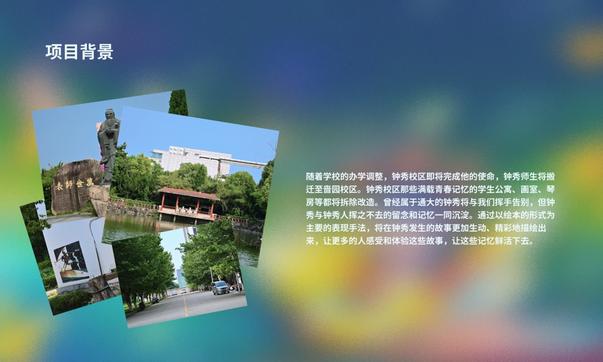
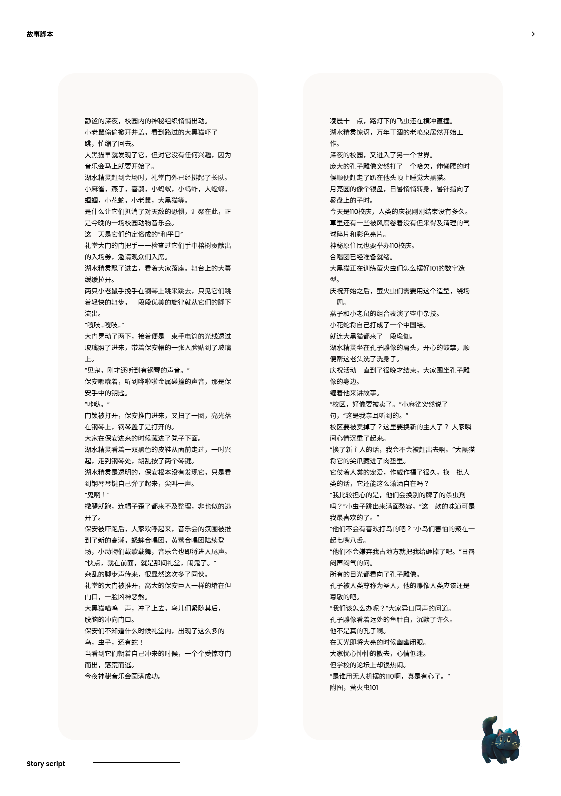

《钟秀梦游记》
插画绘本
Project Background

《钟秀梦游记》是一组以绘本叙事为核心展开的插画项目。作品围绕梦境、游历与想象性的视觉体验展开，通过场景设定、色彩氛围与叙事节奏，构建具有故事感和画面延展性的绘本世界。
Story Script

在正式绘制之前，项目先通过故事脚本整理叙事结构与画面顺序，用于明确情节推进、视觉重点以及绘本阅读中的节奏关系。
Final Illustrations

在完成前期设定与脚本梳理后，项目进入正式成图阶段，通过完整插画画面呈现故事情境、角色氛围与整体视觉语言。
Display / Presentation

展示部分用于呈现该项目在最终输出中的整体效果，帮助观者从作品集展示层面理解绘本插画项目的完整视觉呈现方式。